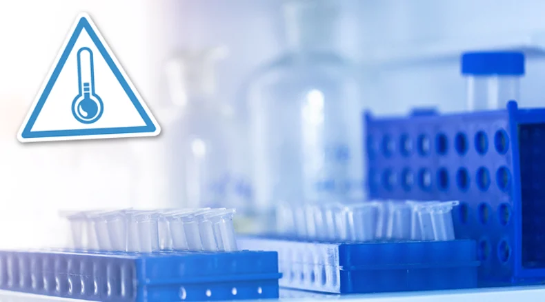
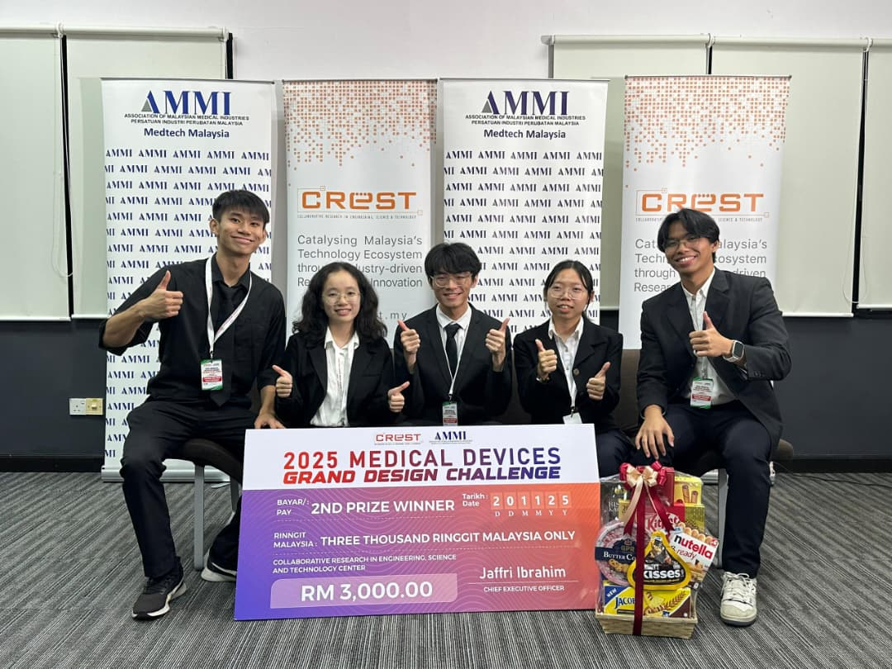
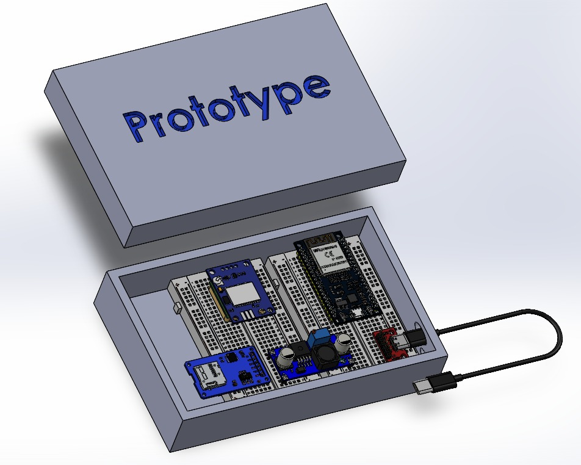
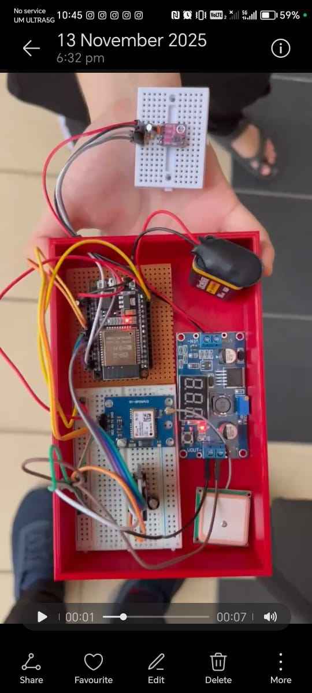

ARMCOLD
AI Real-Time Monitoring Cold Chain

Tech Stack
Overview
ARMCOLD (AI Real-Time Monitoring Cold Chain) is an intelligent cold chain monitoring system developed for the 2025 Medical Devices Grand Design Challenge. The project focuses on ensuring the safe transportation of temperature-sensitive medical specimens by integrating IoT sensors, embedded systems, and AI predictive models. The system enables real-time tracking of environmental conditions such as temperature, humidity, and location, while also providing predictive insights to prevent potential risks during transit.
Awards & Honors
ARMCOLD was awarded 1st Runner-Up at the 2025 Medical Devices Grand Design Challenge, organized by CREST and AMMI at Sains@USM, Penang. The project was recognized for its innovation in medical device monitoring, strong technical implementation, and its practical relevance in improving cold chain logistics for healthcare applications.
Problem
Maintaining the integrity of temperature-sensitive medical specimens during transportation is a critical challenge in healthcare logistics. Key issues include:
- Lack of real-time visibility into storage conditions during transit
- Risk of temperature and humidity fluctuations compromising specimen quality
- Delayed detection of adverse conditions, leading to irreversible damage
- Limited predictive capability to anticipate and prevent potential failures
- Inefficient communication between transport personnel and stakeholders
These challenges can result in compromised samples, increased costs, and potential risks to patient diagnosis and treatment.
Solution
ARMCOLD provides an integrated hardware-software solution that combines embedded sensors, mobile applications, and machine learning models to ensure end-to-end cold chain visibility and control. The system continuously monitors environmental conditions and location data, while AI models analyze trends to predict potential risks before they occur. This enables proactive intervention, ensuring specimen safety and improving reliability in medical logistics.
To enhance reliability in low-connectivity or rural areas, a Bluetooth-enabled driver mobile application is implemented as a gateway between the cold box and the cloud system. This allows the driver to receive immediate alerts directly via Bluetooth when abnormal conditions are detected, even without internet access. The driver app then synchronizes data using available Wi-Fi or mobile data, uploading sensor readings and alert notifications to a cloud database. These updates are subsequently reflected in a stakeholder dashboard, enabling real-time remote monitoring and coordinated response across the logistics chain.
Key Features
-
Real-Time Environmental Monitoring
Tracks temperature and humidity continuously using embedded sensors
-
GPS Tracking & Map Integration
Provides live location tracking for full visibility during transportation
-
AI-Based Predictive Analytics
Utilizes models such as LSTM and Random Forest to forecast potential risks
-
Flexible & Resilient Connectivity
Hybrid communication ensures reliable data transfer and real-time alerts
-
Embedded System Design
Custom-built circuitry with optimized power management for portability and efficiency
Future Development
Due to time constraints during the competition, the experiments did not collect sufficient data, which may have caused underfitting or overfitting in the machine learning models. The initial study focused on how external factors such as surrounding temperature, weather conditions, and exposure affect the internal temperature of the cold box, but the dataset was limited. Future work will focus on collecting more diverse real-world data to improve model accuracy and reliability. Additionally, the use of a monitoring app by logistics drivers is not yet a common practice, which may pose adoption challenges. Future development will include real-world testing with drivers, gathering feedback, and refining the app to make it more user-friendly and practical for daily use.
Project Gallery


